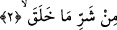
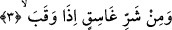
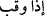
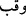
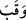
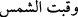
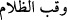

edeyim, sen âmîn de” dedi ve Rabbinden o saatte sıkıntıda olan herkesten sıkıntısını
gidermesini istedi. Bu sebeple, her hasta gecenin son kısmında belli bir rahatlık
hisseder.
Rivâyete göre sahâbeden biri Şam’a gitmişti. Zımmîlerin evlerini gördü, içinde
bulundukları alçak hayâta rağmen dünyalık imkânlarının çokluğunu fark edince: “Ben
buna ehemmiyet vermem, âkıbetleri felâk değil mi?” dedi. Kendisine, felâk nedir, diye
sorulunca “Cehennemde bir evdir, o açıldığı zaman bütün Cehennem ehli çığlık atar.”
2. Yarattığı şeylerin şerrinden,
Yaratmış olduğu insan, cin ve tabiat ve ihtiyâr sâhibi bütün diğer mahlûkâtın
şerrinden… demektir. Yarattığı şeylerin kötülüğünden; insan, cin, ayaklı ve sürüngen
hayvanların kötülüğünden; ezâ ve cefâsından…
Âyet-i kerime, bedenî olsun olmasın darb, katl, sövme, ısırma, hayvan sokması, sihir
ve benzeri bütün şer ve zararları içine alır. Şerrin yaratılmış olanlara yâni halk âlemine
izâfetle kullanılması, onun emr âleminde bulunmayıp sâdece halk âleminde bulunması
dolayısıyladır. Söz konusu halk âlemi, farklı maddelerin karışımı, kevn ve fesâdı
(oluşum ve bozulmayı) gerektiren zıt keyfiyetlerin etkileşim esâsları üzerine binâ
edilmiştir. Emir âlemi ise mahza hayırdır ve bütünüyle şer şâibelerinden münezzehtir.
Allah’ın şerri yaratmadığını söyleyen bazı Mutezilîler kelimeyi tenvinli okumuşlar
ifâdesindeki mâ’yı da nâfiye olarak almışlardır. Bu batıl bir mezhebe mebnî merdûd bir
kırâattir.
3. Karanlığı çöktüğü zaman gecenin şerrinden,
Şerrin bazı türleri, daha öncekilerin tahtında münderiç olmasına rağmen, çokça vâki
olup daha fazla istiâzeyi gerektirdiği için husûsî olarak zikredilmiştir. Diğer taraftan
neden sığınıldığının belli olması istiâzeye daha çok ehemmiyet verildiğini gösterir ve
sığınma talebinin kabû edildiğini daha çok hissettirir.
Yâni kararmış, karanlığı şiddetlenmiş gecenin şerrinden… demektir. Bu da şafağın
kaybolmasından sonradır.
eşyâların üzerindeki oyuklara
denilir. Kayalarda içerisinde su biriken
oyuklar da bu kabîldendir.
fiili çukura girdi, mânâsında kullanılır.
güneş
kayboldu demektir.
da karanlık oldu mânâsındadır. Burada, gecenin karanlığı
her şeyi kapladığı zaman mânâsı vardır. Bu şekilde kayıtlanmasının sebebi, şerrin
gecede daha çok olması ve ondan kaçınmanın daha çetin ve zor olması sebebiyledir.